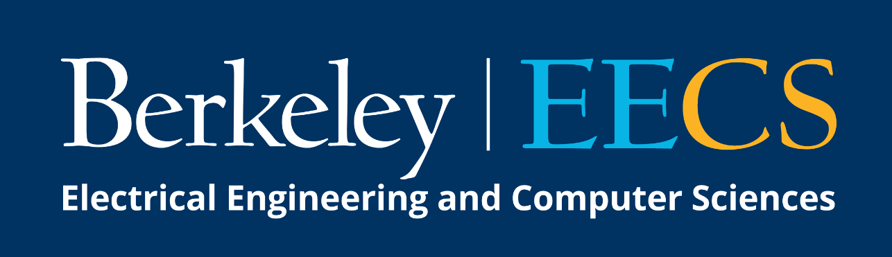
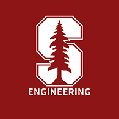

|
Hey! I'm an engineering graduate studying Industrial Engineering and Operation Research (IEOR) at UC Berkeley. Also, I am an incoming M.S. Computer Science Student at Northeastern University. Currently, I'm interested in Software Development, Back-end Architecture, Practical Algorithm, and Computer Networking. |

|
|
|
|  |
CS 61A: The Structure and Interpretation of Computer Programs
Lecturer: Summer 2022 • Sample lecture slides • Sample exam • Course evaluations Head TA: Spring 2023, Fall 2022, Spring 2022 • Sample discussion slides • TA evaluations TA: Fall 2021, Summer 2020 • Teaching website Tutor: Summer 2021, Spring 2021, Fall 2020 Academic Intern: Spring 2020 |
|  |
CS106A – Code in Place: Programming Methodologies
Section Leader: Spring 2021, Spring 2020 |
|
[Spring 2023] Top 6.5% in CS 189 (Machine Learning) Kaggle competition (>700 students). Trained an SVM model to classify CIFAR-10 data with 56% accuracy. [Fall 2021] Top 6% in CS 170 (Algorithms) Final Project competition (>700 students). Designed a greedy algorithm implemented with dynamic programming to approximate an NP-hard problem. Generated and tested heuristics on the cloud. [Spring 2021] Upsilon Pi Epsilon (UPE). International CS Honor Society. Top third of Berkeley CS majors. [Spring 2020] CS 61A Outstanding Academic Intern. Awarded to top 9 out of over 130 Academic Interns for exemplary teaching. |
|
Amazon, Threat Intelligence
|
|
Codebase
Computer Science Mentors
Extended Reality @ Berkeley
AFX Tech
University Wind Ensemble
University Chorus
|
|
Last updated February 3, 2023. |